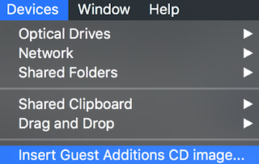

使用vagrant up命令启动vbox后，发现最后输出了一个提示错误
Failed to mount folders in Linux guest. This is usually because
the "vboxsf" file system is not available. Please verify that
the guest additions are properly installed in the guest and
can work properly. The command attempted was:
mount -t vboxsf -o uid=`id -u vagrant`,gid=`getent group vagrant | cut -d: -f3` vagrant /vagrant
mount -t vboxsf -o uid=`id -u vagrant`,gid=`id -g vagrant` vagrant /vagrant
The error output from the last command was:
/sbin/mount.vboxsf: mounting failed with the error: No such device
显示在Linux guest中没有安装VirtualBox Addition插件，导致无法挂载共享目录。
有两种可能导致上述问题：
- 没有安装VirtualBox Additions插件
- 安装过VirtalBox Additions插件，但是Linux Guest系统升级了内核，新的内核模块目录中缺少VirtualBox的对应模块
安装VirtualBox Additions
如果Guest Linux初次安装，并且VirtualBox中没有安装VirtualBox Additions，则访问安装VirtualBox Additons菜单

此时会将/Applications/VirtualBox.app/Contents/MacOS/VBoxGuestAdditions.iso光盘镜像添加到到Linux Guest操作系统。这点可以从虚拟机的VirtualBox图形管理界面查看到：

不过，如果Linux Guest系统看不到这个设备（没有自动挂载），则需要在Guest操作系统手工挂载
mount /dev/cdrom /mnt
这里设备
/dev/cdrom可以通过ls -lh /dev/cdrom看到如下设备（也可能是/dev/dvd设备或者是/dev/cdrom1）
lrwxrwxrwx. 1 root root 3 Mar 1 14:54 /dev/cdrom -> sr0
如果不想使用图形管理界面，可以使用命令行工具VBoxMange
VBoxManage storageattach "centos7" --storagectl "IDE Controller" \
--port 1 --device 0 --type hdd --medium /Applications/VirtualBox.app/Contents/MacOS/VBoxGuestAdditions.iso
cd /mnt
./VBoxLinuxAdditions.run
升级内核后重新安装VirtualBox Additions模块
如果已经安装过VirtualBox Additions，在升级了Guest操作系统的Linux内核之后出现上述无法加载vboxsf模块问题。则可以
cd /opt/VBoxGuestAdditions-*/init
sudo ./vboxadd setup
此时系统会根据内核版本重新编译安装一次模块。（此方法适合升级过Guest Linux内核，但是VirtuaoBox没有升级过虚拟机软件，即没有必要升级VirtualBox Additions的情况）
如果系统发行版有
dkms软件包，建议在安装Linux Guest Additions之前先安装dkms
当然，如果VirtualBox升级过虚拟软件版本，则建议使用前一种安装VirtualBox Additions方法，重新安装一次模块。安装过程会删除掉旧版本，重新安装一次内核模块。